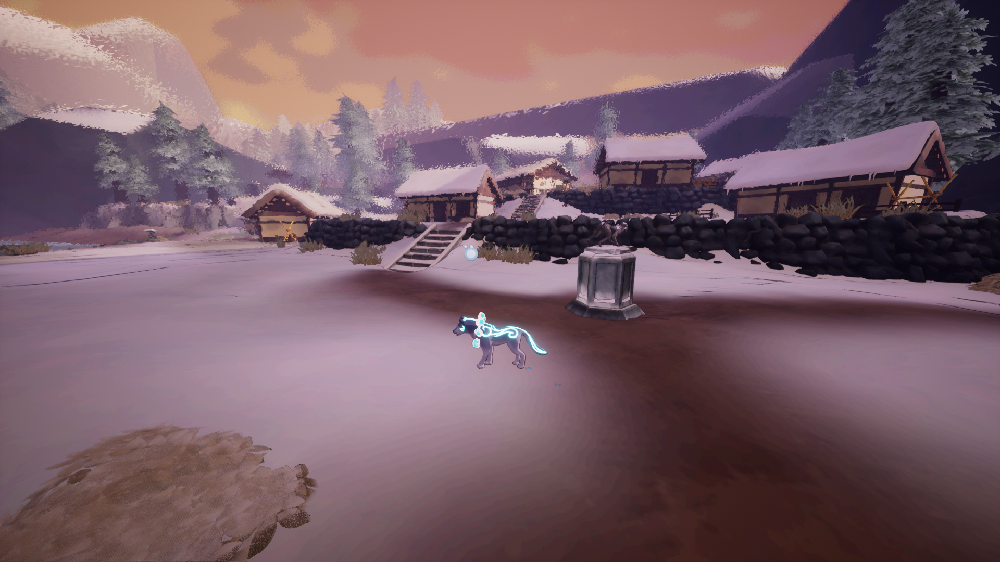
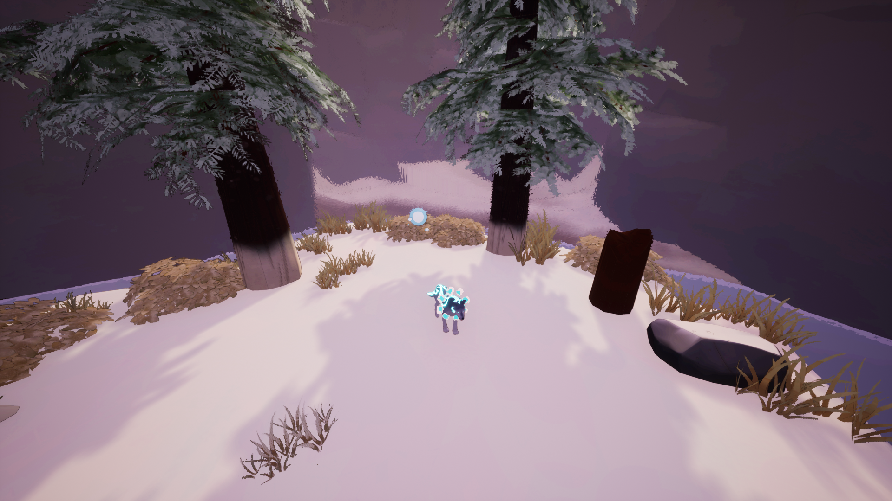
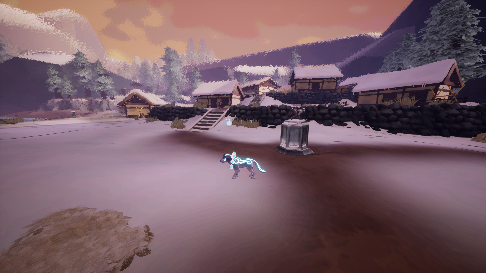
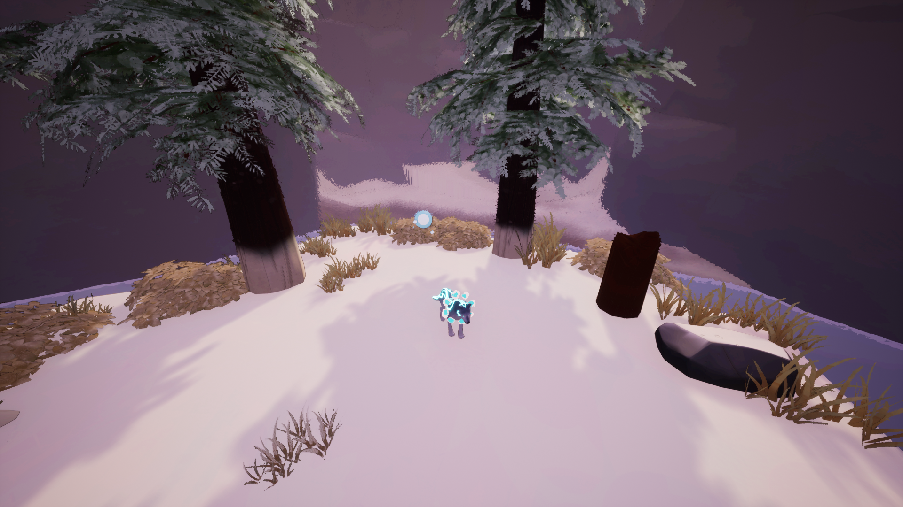

First Impressions
As an average gamer, *Path of Kami Demo* drew me in with its calming visuals and unique wolf spirit character. The art style is simple yet beautiful, creating a tranquil atmosphere perfect for exploration.
Gameplay and Exploration
The game encourages you to solve puzzles and explore a world inspired by Japanese culture. The controls felt intuitive, and I enjoyed figuring out how to interact with the environment to progress.
Graphics and Sound
The graphics are not hyper-realistic but are well-crafted and artistic. The music and sound effects enhance the experience, creating an almost meditative mood while you play.
Challenges and Puzzles
The puzzles were engaging but not overly difficult, which made them satisfying to solve. The game guides you just enough without feeling hand-held, keeping things enjoyable.
Final Thoughts
Path of Kami Demo* offers a relaxing and enjoyable gaming experience, perfect for players looking for something calm and puzzle-focused. However, I think the game could benefit from incorporating occasional, more challenging puzzles to add variety and keep players on their toes. I look forward to seeing how the game develops in the future!
Gameplay Screenshots
Here are some screenshots from my playthrough:
 


